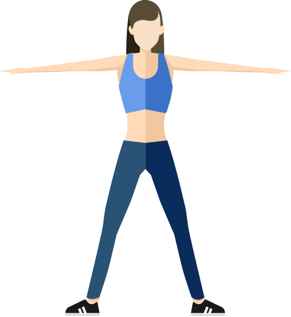
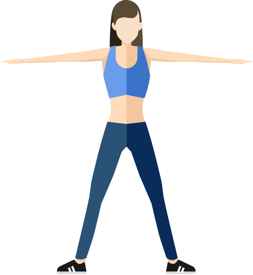

{{userInfoView.name}}的报告
检测时间：{{inspectDateStr}}
{{userInfoView.name}}性别：{{userInfoView.sex==1?'男':'女'}}年龄：{{userInfoView.age}}


 



{{userInfoView.height}}cm
{{userInfoView.bmiValue}}
{{userInfoView.weight}}kg
{{userInfoView.bmiValue}}过瘦
{{userInfoView.bmiValue}}标准
{{userInfoView.bmiValue}}超重
{{userInfoView.bmiValue}}肥胖
体重过低，易导致身体抵抗力下降，免疫力降低。
请继续保持。
超重是引起慢性病的重要危险因素，超重人群患高血压的危险是体重正常者的3~4倍，患糖尿病的危险是体重正常者的2~3倍。
肥胖是引起慢性病的重要危险因素，肥胖者中90%以上易患高血压或糖尿病，缺血性脑卒中发病的相对危险度为2.2。
血压
收缩压（高压 ） {{bpView.sP}} {{bpView.sP}}
范围值90-140 单位mmHg
舒张压 {{bpView.dP}} {{bpView.dP}}
范围值60-90 单位mmHg
采集数据波形图
综合评估结果
{{item.name}}：
{{site.resultName}} 基本正常
{{zong.name}}
{{item.resultName}}

以下是详细指标检测结果
{{item.metricName}} {{item.tv}} {{item.tv}}
范围值 {{item.sv}} {{item.metricUnit}}
{{item.metricName}} {{item.tv}} {{item.tv}}
范围值 {{item.sv}} {{item.metricUnit}}
{{item.metricName}} {{item.tv}} {{item.tv}}
范围值 {{item.sv}} {{item.metricUnit}}
{{item.metricName}} {{item.tv}} {{item.tv}}
范围值 {{item.sv}} {{item.metricUnit}}
心血管疾病与我们的关系
{{item.bannerName}}
{{item.bannerTitle}}
2020-12-09